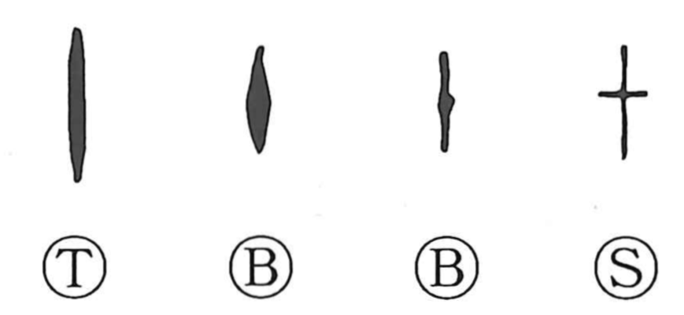

十

Kun: too, to | On: juu, ji, ju
ten
Explanation
十 began as a vertical counting mark. In the early numeral system, a horizontal stroke indicated one, a vertical stroke ten, and a cross-shaped mark five. The distinction depended on the arrangement of the counting rods.
Bronze forms later added a thickened mark toward the lower part of the vertical stroke. That mark developed into the short horizontal line of 十. The character's cross therefore arose within the history of the ten-sign.
Ten completes a numerical set and can suggest completeness or the whole. Groups of ten are written with 什, whether people, objects, or poems, and joined ten-signs give numerals such as 廿.